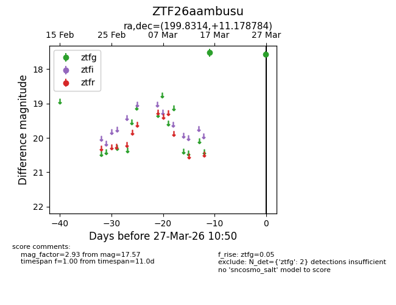
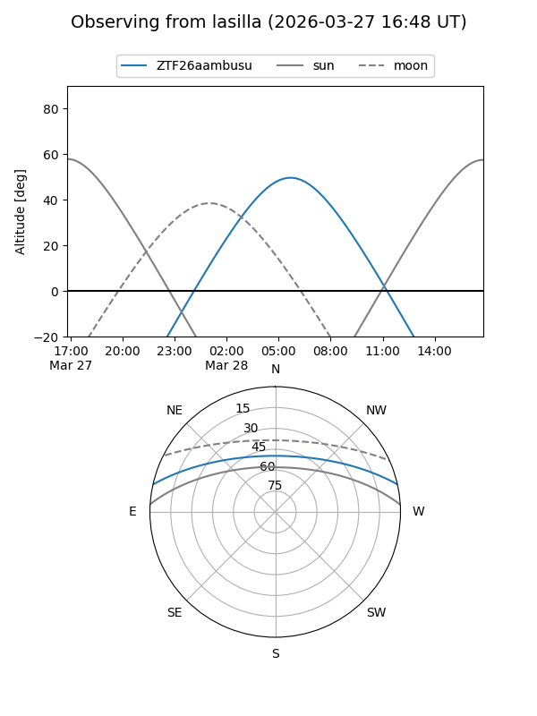
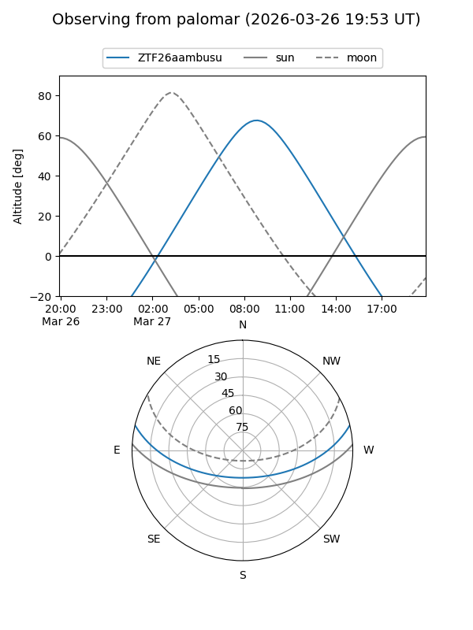

ZTF26aambusu
Target ZTF26aambusu at 2026-03-27 10:53
Aliases and brokers:
FINK: link
Lasair: link
ALeRCE: link
alt names
ZTF26aambusu (ztf,fink_ztf)
Coordinates:
equatorial (ra, dec) = 199.8314,+11.17878
equatorial (HMS+DMS) = 13:19:19.54,+11:10:43.62
galactic (l, b) = (326.6157,+72.75550)
Flags:
Photometry:
last ztfg=17.57
2 ztfg detections
Lightcurve

Visibility


Additional plots